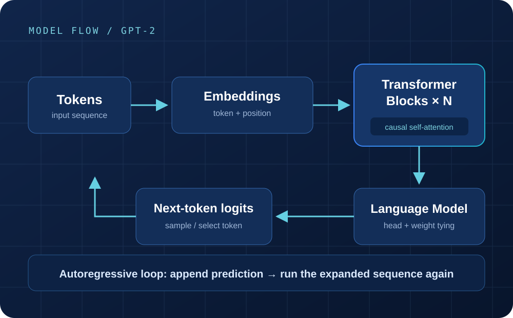
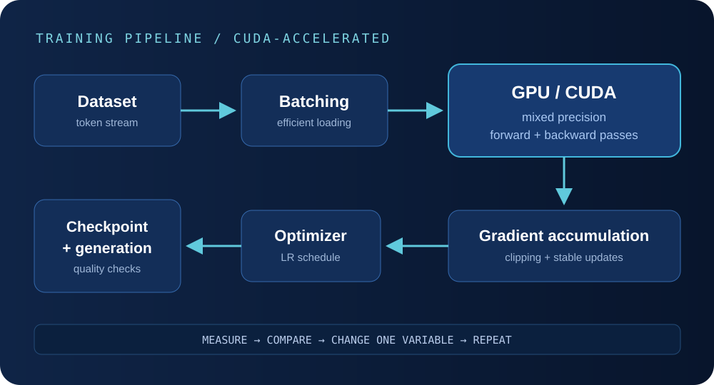

Independent ML project
GPT-2 Reimplementation & GPU Training Optimization
I rebuilt GPT-2 in PyTorch to understand the model path directly, then developed a CUDA-accelerated training loop around it.

Overview
Rebuilding the model made the abstractions concrete.
High-level libraries make language models easy to call, but they hide many of the details that matter when something breaks. I implemented the core GPT-2 path directly in PyTorch so I could trace tensor shapes, causal masking, residual connections, shared weights, loss computation, and generation.
I then connected the model to a CUDA training loop with mixed precision, gradient accumulation, learning-rate scheduling, clipping, checkpointing, and efficient data loading.
Architecture
From token IDs to next-token logits
Token and positional embeddings create the sequence representation. Each transformer block applies causal self-attention and a feed-forward network through residual paths. The final hidden state is projected into vocabulary logits, with the output weights tied to the token embedding matrix. Generation selects a token, appends it to the context, and repeats the forward pass.
Building attention
Causality depends on getting the tensor behavior right.
I implemented multi-head self-attention by projecting queries, keys, and values, splitting them into heads, applying scaled dot-product attention, and recombining the results. The causal mask prevents each token from reading positions that come later in the sequence.
The implementation also includes transformer blocks, residual connections, token and positional embeddings, weight tying, and autoregressive generation. Weight tying reuses the token embedding matrix for the output projection, reducing the parameter count and keeping input and output token representations connected.
GPU training
Memory and data movement shaped the training loop.
Mixed precision reduced GPU memory pressure and made the training configuration more practical. Gradient accumulation provided a larger effective batch without requiring the full batch to fit in VRAM at once. The loop also handles device transfer, gradient scaling, clipping, scheduled learning rates, optimizer updates, checkpointing, and generation checks.

Training decisions
Each optimization addressed a specific constraint.
- Direct PyTorch modules: more implementation work, but full visibility into the forward path and intermediate shapes.
- Mixed precision: lower memory use and faster supported operations, with gradient scaling around numerically sensitive updates.
- Gradient accumulation: a larger effective batch under limited VRAM, with additional update bookkeeping.
- Gradient clipping: limits unusually large updates during training.
- Learning-rate scheduling: controls how aggressively the optimizer updates the model over the run.
- Efficient data loading: keeps the GPU from waiting unnecessarily for the next batch.
Results / benchmarking
The complete model and training path are working.
The project supports causal language-model training and autoregressive generation on a CUDA-capable GPU. GPU benchmarking is the next step. I plan to measure training throughput, VRAM usage, step time, and loss under a controlled configuration.
Lessons
Correctness came before speed.
Implementing the model clarified how attention, residual computation, shared weights, and generation fit together. The training work showed that model code is only part of the job: data-loading speed, device transfer, numeric precision, update frequency, and checkpointing all affect what experiments are practical.
I learned to separate three questions during debugging: Is the model path correct? Is training stable? Is the system using the GPU efficiently? Keeping those questions separate made problems easier to isolate.
Related work